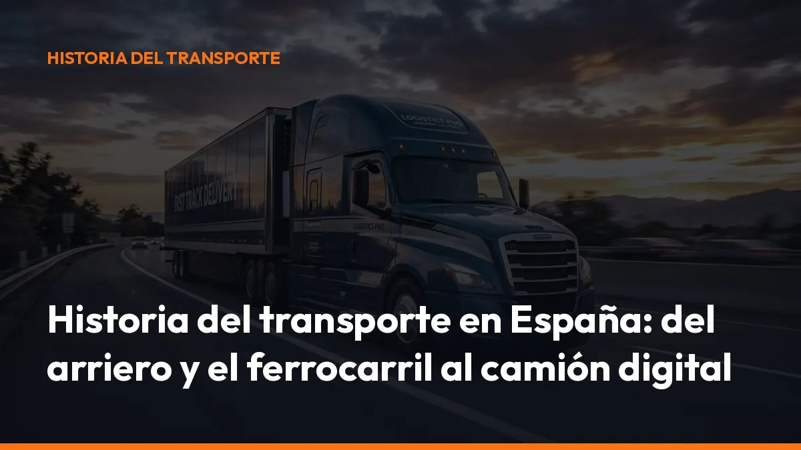

Historia del transporte en España: del arriero y el ferrocarril al camión digital

Durante siglos, una carga dependía de la fuerza de una mula. Después llegó el ferrocarril. Más tarde, el camión convirtió la carretera en el gran eje logístico del país. Hoy, el transporte avanza hacia una nueva etapa: documentos digitales, trazabilidad, conectividad y gestión desde el móvil.
El sector ha cambiado muchas veces. Pero el objetivo siempre ha sido el mismo: llevar una mercancía desde su origen hasta su destino de forma más rápida, segura y organizada.
De los caminos de tierra a las primeras rutas comerciales
Antes de los motores, el transporte terrestre dependía de los caminos, los animales y las condiciones meteorológicas.
Los arrieros eran profesionales especializados en transportar mercancías con mulas, burros y caballos. Formaban recuas y recorrían largas distancias entre pueblos, mercados, puertos y ciudades.
Transportaban productos esenciales como:
- Cereales.
- Vino y aceite.
- Lana y tejidos.
- Minerales.
- Herramientas.
- Alimentos y productos artesanales.
Las mulas eran especialmente útiles en España por su resistencia y capacidad para avanzar por caminos montañosos. En muchas zonas, el arriero era el único enlace entre una localidad aislada y los grandes centros comerciales.
Para las cargas más pesadas también se utilizaban carros y galeras tiradas por bueyes. El transporte era lento y caro. Además, los caminos sufrían problemas de conservación, inseguridad y falta de infraestructuras.
La velocidad dependía de la distancia, el terreno y el animal. Una avería no se resolvía cambiando una rueda o llamando a un servicio de asistencia: podía significar perder varios días de viaje.
Aun así, la arriería creó las primeras redes profesionales de transporte de mercancías en España. Su conocimiento de las rutas y de los mercados fue imprescindible durante siglos.
El ferrocarril cambia las reglas en el siglo XIX
La llegada del ferrocarril fue uno de los grandes puntos de inflexión de la historia del transporte.
El tren permitía transportar más carga, recorrer distancias mayores y mantener una velocidad más estable que los carros y las recuas. También conectaba zonas productoras con puertos, fábricas y ciudades.
En la península, la línea Barcelona-Mataró, inaugurada el 28 de octubre de 1848, suele considerarse la primera gran línea ferroviaria española para viajeros. Poco después se impulsaron conexiones como Madrid-Aranjuez.
Antes, en 1837, se había inaugurado el ferrocarril de La Habana a Güines, cuando Cuba todavía formaba parte de la Corona española. En la península también existieron líneas mineras y proyectos ferroviarios anteriores o paralelos a Barcelona-Mataró.
La expansión ferroviaria provocó cambios profundos:
- Más capacidad: los trenes movían grandes volúmenes de mercancías.
- Menos dependencia del clima: las rutas eran más previsibles.
- Nuevos mercados: las empresas podían vender más lejos.
- Crecimiento industrial: carbón, hierro y productos agrícolas circulaban con mayor facilidad.
- Declive de la arriería: los oficios tradicionales perdieron protagonismo en los principales corredores.
El ferrocarril no eliminó de inmediato a los arrieros. Durante décadas, ambos sistemas convivieron. Los animales y los carros transportaban mercancías hasta las estaciones, mientras que el tren cubría los trayectos largos.
El automóvil y el nacimiento del transporte por carretera
A finales del siglo XIX y comienzos del XX comenzaron a aparecer los primeros vehículos de motor. Su implantación fue progresiva, pero cambió por completo la logística.
El camión ofrecía una ventaja decisiva frente al ferrocarril: podía realizar un servicio puerta a puerta. No dependía de una estación concreta ni exigía transbordar la mercancía entre distintos medios.
Desde las primeras décadas del siglo XX, los camiones y autobuses fueron sustituyendo poco a poco a los carros y a las diligencias. La generalización del motor de explosión aceleró el final de la tracción animal en el transporte profesional.
El nuevo modelo permitía:
- Recoger la mercancía directamente en la fábrica.
- Entregarla en el almacén del cliente.
- Adaptar la ruta a cada servicio.
- Llegar a pueblos sin conexión ferroviaria.
- Reducir los tiempos de distribución.
La carretera se convirtió así en una infraestructura económica básica. El transportista dejó de depender únicamente de los horarios del tren y comenzó a gestionar rutas más flexibles.
De las carreteras nacionales a la red de autovías
Durante buena parte del siglo XX, el transporte de mercancías se apoyó en carreteras nacionales, travesías y rutas de un solo carril por sentido.
El crecimiento industrial, el aumento del consumo y la expansión del comercio exigieron mejores vías. Desde la segunda mitad del siglo XX se construyeron autopistas y, posteriormente, autovías de gran capacidad.
La red de autovías permitió conectar los principales centros logísticos de España:
- Madrid y el centro peninsular.
- Barcelona y el corredor mediterráneo.
- Valencia y los puertos del Mediterráneo.
- Bilbao y el norte industrial.
- Sevilla y el sur peninsular.
- Galicia, Castilla y León y los corredores hacia Portugal.
El camión pasó a ser el medio principal para buena parte del transporte de mercancías. Su flexibilidad resultaba especialmente importante para cargas completas, distribución regional y servicios con varias paradas.
Pero el crecimiento también trajo nuevos retos: congestión, accidentes, emisiones, descanso de los conductores, control de tiempos y necesidad de profesionalizar las empresas.
La regulación moderna: LOTT y Unión Europea
El aumento del transporte profesional hizo necesario crear un marco jurídico común. En España, la referencia básica es la Ley 16/1987, de Ordenación de los Transportes Terrestres, conocida como LOTT. Esta ley regula aspectos esenciales del transporte por carretera y ferrocarril, como:
- El acceso a la profesión de transportista.
- Las autorizaciones de transporte.
- La contratación de servicios.
- Las responsabilidades de las empresas.
- El régimen de inspección y sanciones.
- La organización del transporte terrestre.
La LOTT se desarrolla mediante el ROTT, aprobado por el Real Decreto 1211/1990. Puedes consultar también el texto consolidado de la LOTT en el BOE.
La entrada de España en la Comunidad Económica Europea en 1986 y la creación del mercado único europeo en 1993 ampliaron todavía más el ámbito de actuación de las empresas españolas.
Desde entonces, el transportista opera dentro de un mercado con reglas comunes sobre:
- Acceso al mercado internacional.
- Tiempos de conducción y descanso.
- Tacógrafo.
- Seguridad vial.
- Emisiones y medio ambiente.
- Competencia y condiciones laborales.
- Documentación del transporte.
La ruta ya no termina en la frontera. Una empresa española puede trabajar diariamente con clientes, proveedores y transportistas de distintos países europeos.
Del documento en papel al e-CMR
Durante décadas, la documentación viajó en carpetas, sobres y archivadores. Albaranes, cartas de porte, documentos de control y justificantes acompañaban físicamente a la mercancía.
La digitalización ha cambiado esta dinámica.
En el transporte internacional, la e-CMR permite gestionar electrónicamente la carta de porte prevista en el Convenio CMR. El Protocolo adicional reconoce que la carta de porte electrónica puede tener la misma fuerza jurídica que su versión en papel cuando cumple los requisitos establecidos.
Puedes consultar el Protocolo relativo a la carta de porte electrónica.
La e-CMR facilita:
- Compartir la documentación al instante.
- Registrar firmas electrónicas.
- Reducir errores de transcripción.
- Consultar el estado del porte.
- Evitar pérdidas de documentos.
- Integrar la información con sistemas de gestión.
En España, el siguiente paso es el DeCA electrónico, el Documento electrónico de Control Administrativo. Según el calendario normativo publicado, a partir del 5 de octubre de 2026 el documento de control administrativo deberá gestionarse en formato electrónico dentro de los servicios sujetos a esta obligación.
La Resolución de 5 de junio de 2026 establece requisitos técnicos relacionados con el documento digital, su disponibilidad, el código QR, la trazabilidad y su conservación.
El camión digital ya está en la carretera
El camión actual no solo transporta mercancías. También transporta datos.
El conductor utiliza el móvil para consultar rutas, comunicarse con la oficina, firmar documentos y demostrar la información del servicio ante un control. La empresa necesita conocer qué porte se ha realizado, quién lo ha firmado y dónde está cada documento.
Este cambio no sustituye la experiencia del transportista. La refuerza.
Con una herramienta como Mi Carga, puedes generar documentos de control y cartas de porte desde el móvil, guardar los PDF en la nube y tener la información disponible en cabina, en la oficina o durante una inspección. Puedes empezar con 10 transportes de prueba gratis, sin tarjeta ni compromiso, desde la aplicación de Mi Carga.
Una historia de adaptación constante
La historia del transporte en España demuestra que el sector nunca ha dejado de adaptarse.
El arriero necesitó conocer los caminos. El ferroviario aprendió a trabajar con horarios y estaciones. El camionero profesional incorporó motores, tacógrafos, GPS y nuevas normas. Ahora, el transportista debe manejar también documentos electrónicos, códigos QR y sistemas de trazabilidad.
El cambio no consiste únicamente en reemplazar el papel por una pantalla. Consiste en trabajar con más control, menos errores y una documentación disponible en cualquier momento.
Durante siglos, transportar una mercancía significaba confiar en el animal, el camino y la memoria. Hoy puedes controlar el servicio desde el móvil y demostrar cada paso con un documento digital.
Ese es el presente del transporte. Y también su siguiente etapa.
Empieza a digitalizar tus portes hoy. Crea tu cuenta en Mi Carga y genera tus primeros documentos gratis.
Fuentes y referencias
- Ley 16/1987, de Ordenación de los Transportes Terrestres — BOE
- Real Decreto 1211/1990, por el que se aprueba el ROTT — BOE
- Hitos de la historia del ferrocarril — Ministerio de Transportes
- Protocolo sobre la carta de porte electrónica e-CMR — BOE
- Resolución de 5 de junio de 2026 sobre el documento electrónico de control — BOE
- Mi Carga: documentos digitales para el transporte
Genera tus 10 primeros documentos gratis con Mi Carga
DeCA, carta de porte y ADR, en PDF, con QR y archivo automático en la nube.
Empezar con 10 documentos gratisArtículo informativo. Consulta siempre el caso concreto de tu operación. ¿Dudas? Escríbenos.